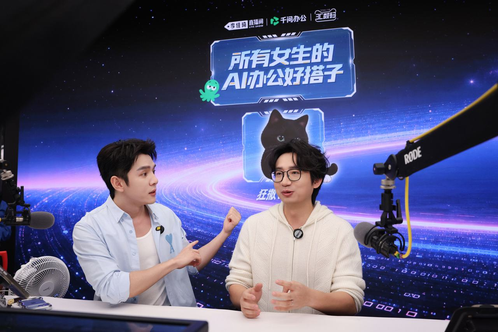
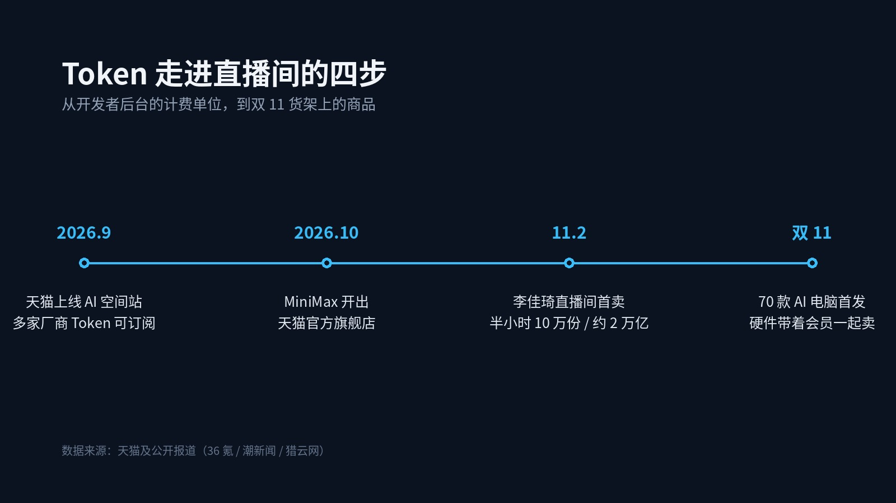

▲ 11月2日晚，千问办公 CEO 陈宇森（右）做客李佳琦直播间。图源：受访者供图
双 11 · Token 上架
321，上 Token：
李佳琦把 AI 卖成了口红
10 分钟 5 万份，半小时 10 万份，约 2 万亿 Token
11 月 2 日晚 7 点半，李佳琦的购物车里多了一件看不见的东西。
没有色号，不能试涂，价格 1 分钱。商品名叫"千问办公个人会员月卡"，卖点是 Token。
评论区开始刷屏："321，上 Token。"
10 分钟，5 万份售出。半小时，接近 10 万份。按直播间的说法，对应的 AI 算力额度合计约 2 万亿 Token。
这是主播直播间第一次卖 AI 算力商品。那个创下"5 分钟卖 1.5 万支口红"纪录的人，这次卖的是算力。
在屏幕前，这只是一场热闹的带货。但把镜头拉远一点，它更像一个标志：AI 的计费单位，第一次以商品的形式，摆上了大众的货架。
1
先把 2 万亿拆开看
这个数字很吓人，但它其实经不起细算。
2 万亿 Token，按 10 万份月卡摊下来，平均每份约 2000 万 Token 的额度。
而这份月卡的价格是 1 分钱。
1 分钱不是定价，是补贴价。它是双 11 的引流款，是品牌买曝光的成本，不是这门生意的真实价格。
还有一点更关键：2 万亿是"权益额度"，不等于实际被消耗掉的算力。就像健身房年卡卖了一万张，不代表一万个人真的去跑了一万次步。
已知事实：
销量：10 分钟 5 万份，半小时近 10 万份
价格：1 分钱会员月卡（补贴价）
折算：约 2 万亿 Token 权益额度
福利池：官方称整场放出 20 万亿 Token
所以别被"2 万亿"这四个字吓住。它证明的是卖得快，不是算力便宜。
2
为什么是现在

▲ Token 走上货架的四个节点
因为供给端已经把路铺好了。
中国信通院的数据：2026 年 6 月，国内词元日均消耗量约 500 万亿，是 2025 年 12 月的近 4 倍。同期，国内词元归一化均价从 6.8 元涨到 13.46 元，接近翻倍。
量在涨，价也在涨。这说明 Token 不再是实验室里的概念，而是真实生产流程里持续烧掉的"数字燃料"。
既然天天要烧，就总得有个地方买。
9 月，天猫上线 AI 空间站，把 DeepSeek、阿里云、智谱、Kimi、千问办公等厂商的 Token 订阅摆进同一个专区。10 月，MiniMax 干脆在天猫开了官方旗舰店。
双 11 开售首日，Token 品类的成交额环比增长 450%。
从专区到旗舰店，再到头部主播的直播间，这条路走得很标准：先能买，再能比价，最后需要一个"321 上链接"的瞬间。
3
他们买的不是 Token
直播里，李佳琦问陈宇森："能不能帮我做个 AI 分身，24 小时陪女生们聊天？"
陈宇森的回答当晚就出圈了："AI 取代不了李佳琦。我更希望帮粉丝用 AI 解决琐事——到点下班、陪伴猫狗、照顾家人。"
这句话聪明的地方在于，他没有卖"算力"，他卖的是"早点下班"。
当晚演示的场景也很具体：家长用 AI 整理孩子的试卷，生成针对性的训练小游戏；直播运营把回放和弹幕丢进去，一键出复盘报告；钓鱼爱好者聊几句话，就生成一张能多人访问的全球钓鱼地图。
没有人会为"2000 万 Token"激动。但会有人为"再也不用熬夜剪复盘"下单。
这跟当年买流量包一模一样。你买的不是 GB，是"能追多少集剧"。
Token 只是账单上的单位，用户要的是账单背后的那件事。
4
它离日用品，还差一枚价签
热闹之下，有个问题没人回答：这 2000 万 Token 到底能干什么？
额度适用于哪些功能？有效期多长？能写几份 PPT、整理几套试卷、生成几张地图？
这些规则不讲清楚，Token 就还是一张看不懂的价签。
还有一个更微妙的后果：万亿级的数字，本身就在制造焦虑。
"2 万亿"听起来像一场必须参与的军备竞赛，好像不囤一点就要被时代甩下。
但现实是，在会员畅用模式下，普通用户对 Token 的感知很弱。真正需要精算额度的，是调 API 的开发者，和要控成本的企业。
对大多数人来说，该问的不是"我的额度够不够"，而是"我到底用不用得上"。AI 的价值不取决于 Token 有多少，取决于它能不能替你把活干完。
5
货架变了，故事也变了
头部主播的货架，一向是观察消费趋势的窗口。
以前摆的是口红、纸巾、洗衣液。现在多了一个 Token，还有内置 AI 的电脑、AI 听记卡、桌面机器人。据天猫披露，今年双 11 会有 70 款搭载千问办公的电脑硬件首发。
当 AI 公司开始谈转化率、客单价、拉新成本，这个行业的重心就变了：从参数和榜单，转向货架和账单。
这不是一家公司的事。Token 一旦被零售，计量、定价、售后就得跟上——像卖流量套餐那样卖智能。
2 万亿 Token 卖爆，
只能证明 AI 上了货架；
能不能留在货架上，
要看下一枚价签写得清不清楚。
评论区聊聊：
你会在直播间囤 Token 吗？
或者说，你现在用 AI，一个月花多少钱？
点个关注。AI 产品怎么卖、怎么定价、值不值，这里会继续盯。
资料来源：潮新闻、界面新闻、猎云网、36 氪、纵相新闻、中国信通院公开数据。文中"2 万亿"为权益额度，非实际消耗算力；1 分钱为双 11 补贴价。